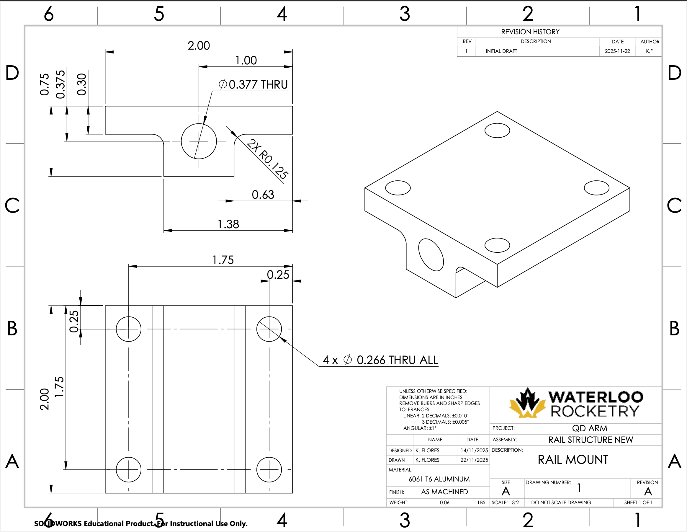
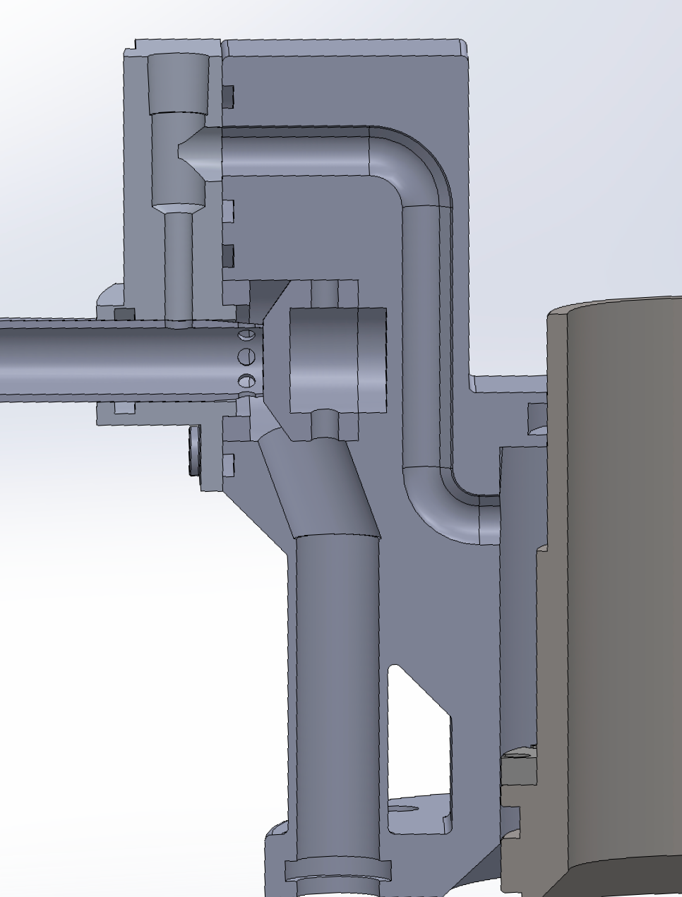
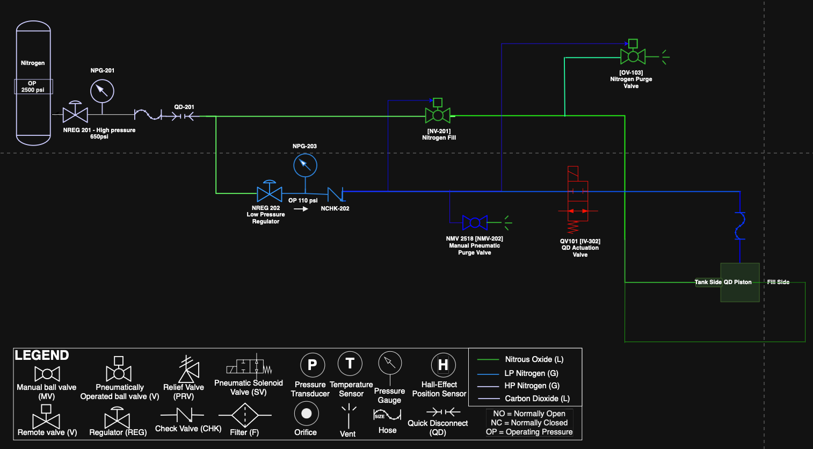
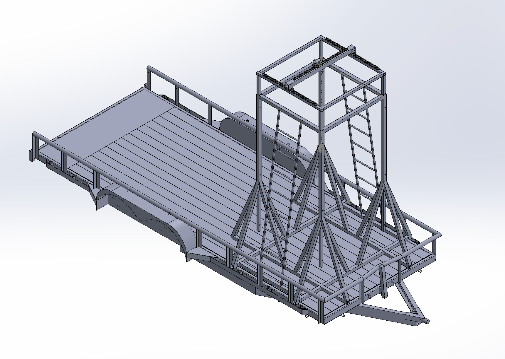
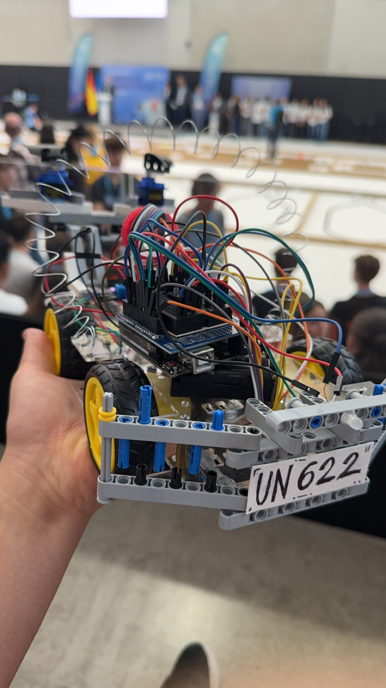

Hi, I'm
Kethan Flores
Mechatronics Engineering @ University of Waterloo
I design, build, and test high-pressure mechanical systems for rockets. Scroll down to see what I've been working on.

Hi, I'm
Mechatronics Engineering @ University of Waterloo
I design, build, and test high-pressure mechanical systems for rockets. Scroll down to see what I've been working on.
Waterloo Rocketry · Propulsion Team · Oct 2025 — Present
The goal of this project was to design a pneumatically controlled latching mechanism to fill the UW 2026 rocket with oxidizer, reliably disconnecting on command to allow the engine's injector valves to open. Joining Waterloo Rocketry and taking on this as a first project was a massive step up from my solo robotics builds. It was my first deep dive into an industry-standard design cycle, where I had to learn formal failure mode mitigation (FMEA), rigorous documentation, and structured testing.
 Piston CAD Model
Piston CAD Model

Technical Drawing Latch Mechanism
Latch Mechanism

Valve Integration CAD
P&ID DiagramActually machining and welding the parts myself revealed a lot about how design and material selection directly impact manufacturing. For example, I originally planned to use tight-tolerance guide rods to slide the piston away from the rocket body after the disconnect. What I didn't realize on the screen was that because my bores were machined across two separate mounting brackets, aligning those rails perfectly in the real world was virtually impossible. It forced me to completely rethink my approach, ultimately resulting in a much more robust, self-aligning mechanism.
 CNC Machining
CNC Machining
 Final Assembly
Final Assembly
During assembly, I verified that all parts met their dimensional tolerances before moving into validation. I wrote the final test procedures and created the plumbing schematics to pressurize the system, simulating the conditions of a real launch. Seeing the system successfully achieve nominal operation during testing was very rewarding.
As the build progressed, I worked closely with other subsystem members to integrate the QD arm with the ongoing development of the internal injector valves. This meant resizing legacy valve CAD and modifying the rocket-side geometry to ensure everything interfaced properly with my new design.
Overall, the QD arm taught me what it actually takes to drive a piece of hardware through the entire design cycle, from a blank CAD file and theoretical math to a fully integrated, functional system on a rocket.
Waterloo Rocketry · Propulsion Team · Jan 2026 — Present
My second major project at Waterloo Rocketry (currently in progress) is the Trailer-Mounted Tank Stand. By Fall 2026, the team aims to transition from a fixed test site to a fully flexible, trailer-mounted test configuration. To make this happen, I engineered a 3-axis adjustable, collapsible frame designed to suspend our 14-foot propellant tank and act as the primary structural routing for the feed system plumbing.

Full CAD AssemblyWhile my QD Arm project was an exercise in tight tolerances and precision interfacing, the Tank Stand forced me to focus on safety, logistics, and long-term design. I was tasked with designing for a 10+ year operational lifespan. This completely shifted my design constraints, meaning motion mechanisms like bearings or lead screws were no longer feasible in the field due to the risk of long-term environmental corrosion. I had to engineer a gantry and telescoping system that could safely extend to a full 14 feet for static fire tests, yet collapse down compactly and reliably for transport.
Because this structure was going on the highway, it had to comply with road safety requirements and withstand sustained vibrational and dynamic loads. It also had to be light enough to not waste gas during towing, while remaining sturdy enough to support the tank load plus two personnel climbing on the sides. To optimize the structure for our budget, I spent hours in Excel performing manual yielding, buckling, and deflection calculations, alongside researching weld integrity across different failure modes. Once the math checked out, I validated the final structure using SolidWorks FEA simulations to guarantee our mandatory 5.0 Factor of Safety.
Unfortunately, hardware projects rarely go exactly to plan. Just as we were about to begin manufacturing, the melting snow revealed extensive rusting on the underside of our existing trailer. The frame was significantly weakened, meaning the team would need to purchase an entirely new one before we could proceed. So, while the Tank Stand is fully engineered and validated, it is currently waiting patiently in SolidWorks until we secure a new trailer to build it on.
 Rusted Underside of Trailer
Rusted Underside of Trailer
Caxton Robotics Team · Oct 2023 — Jun 2025
Before rocketry, I led the electromechanical design for our school's robotics team. I engineered a laser-cut acrylic chassis optimized for front-wheel traction, tuned motor controllers for autonomous line-following, and troubleshot power systems under strict competition time constraints. This background gave me the systems-level thinking I bring to every project today.


I am a Mechatronics Engineering student at the University of Waterloo (3.94 GPA) focused on integrated high-pressure mechanical systems. As a member of the Waterloo Rocketry propulsion team, I design, manufacture, and test pneumatic valves and ground support structures.
I take projects from initial concept to final assembly, supporting my technical drawings and plumbing schematics with hands-on experience in CNC, manual milling, lathe operation, and welding. My background in robotics gives me a strong understanding of how electromechanical subsystems interface.
I apply this system-level approach by directing rigorous testing operations to ensure mechanical reliability and safety. I hold dual Canadian & US citizenship and am fluent in English and Spanish.
Interested in working together? I'd love to hear from you.